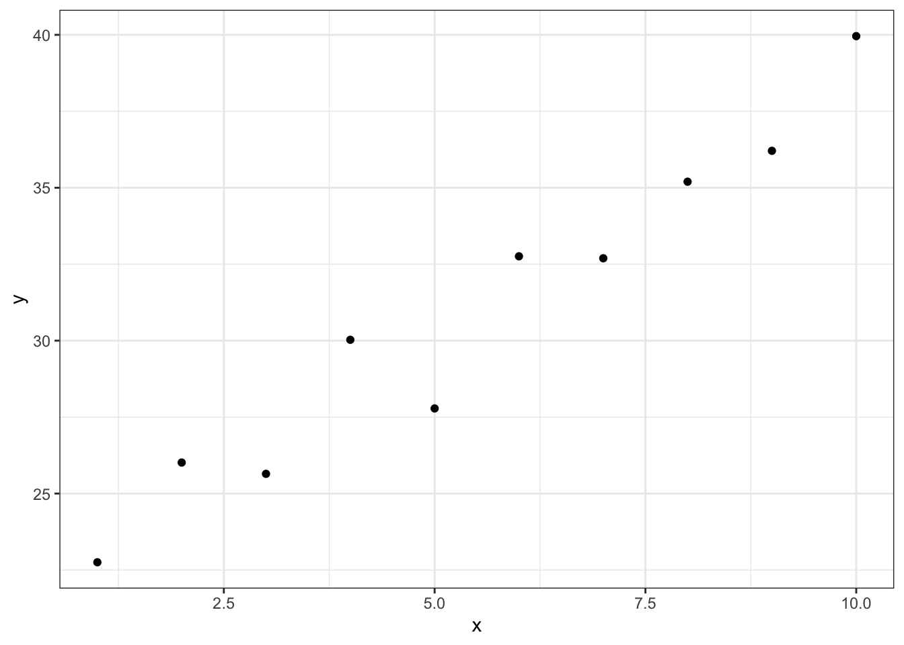
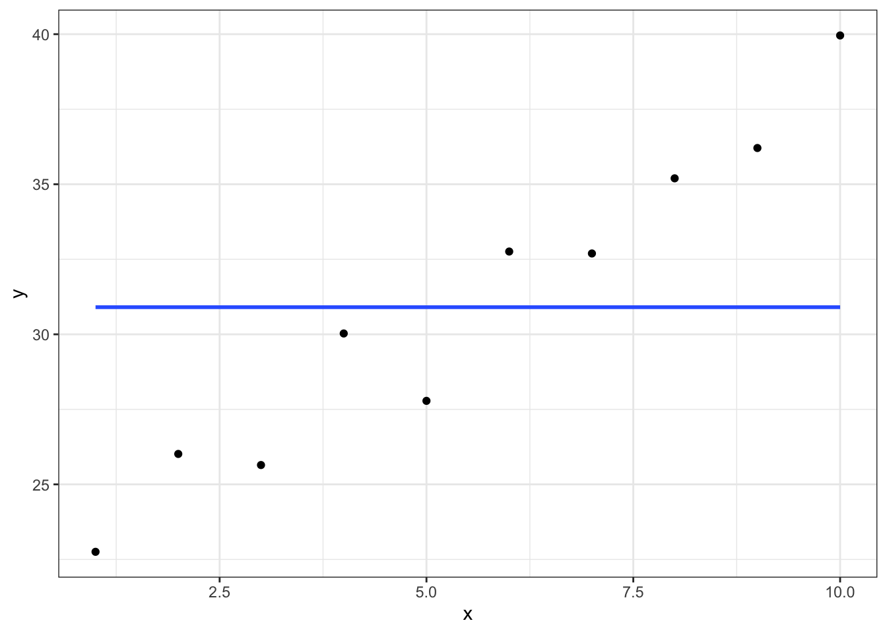
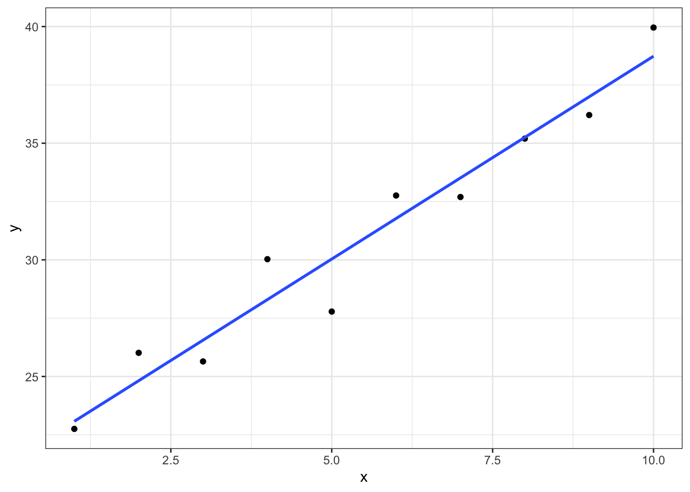
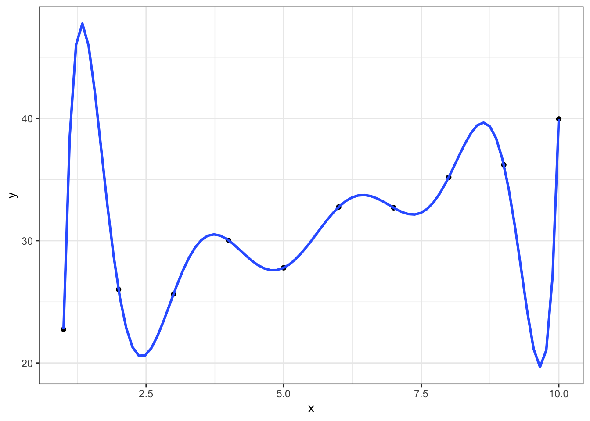
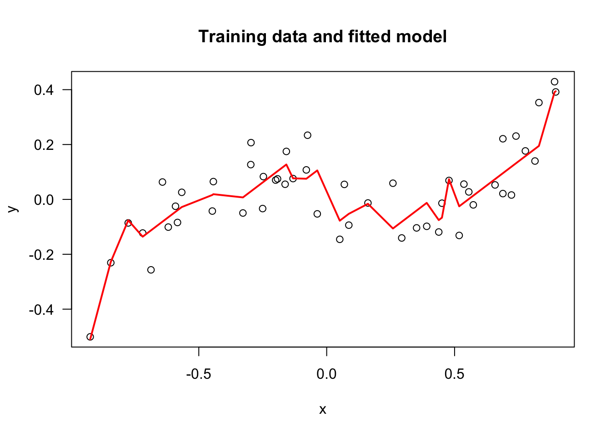
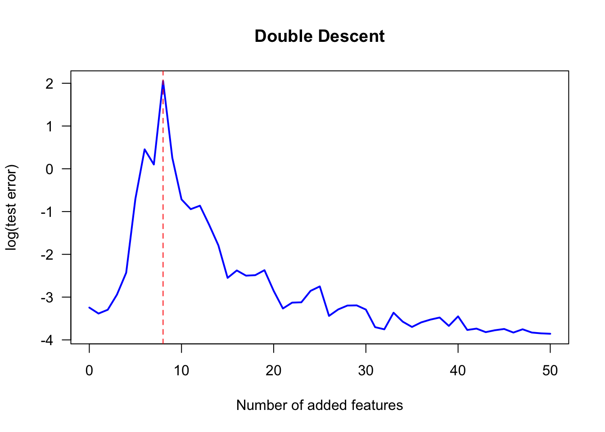
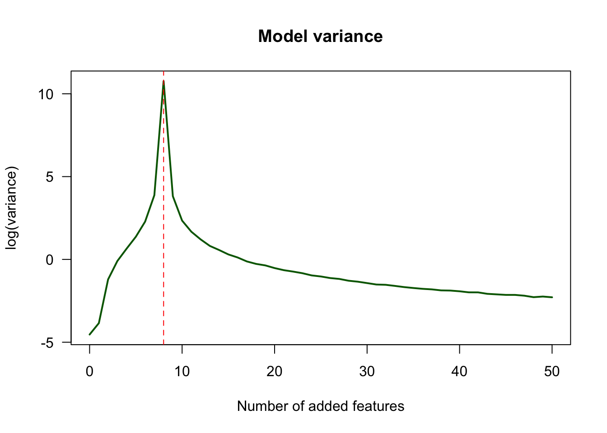
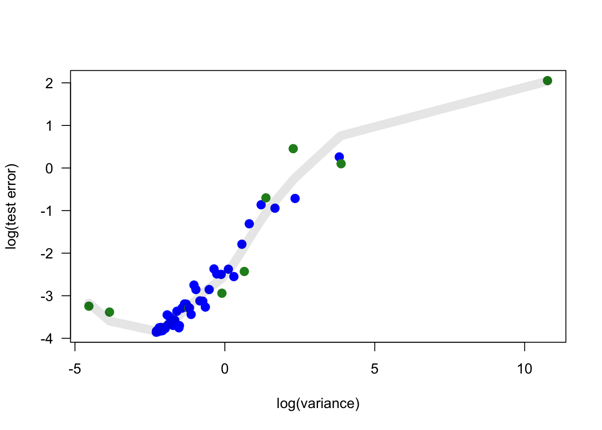
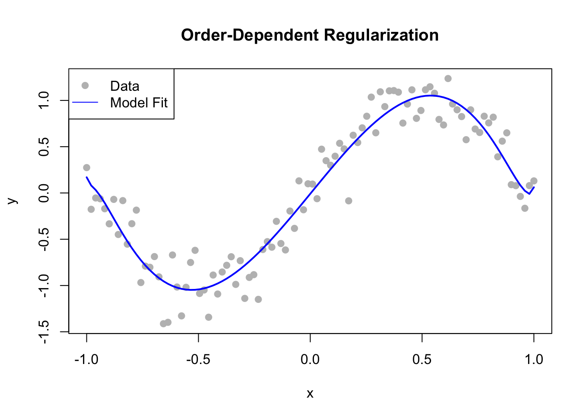

library(tidyverse)
library(easystats)
library(ggformula)
set_theme(theme_bw())
set.seed(666)beware_of_r-square
Setup environment
Overfitting
N <- 10
x <- 1:N
alpha <- 20
beta <- 2
y <- alpha + beta * x + rnorm(N)
d <- tibble(x, y)gf_point(y ~ x, data = d)
gf_point(y ~ x, data = d) |>
gf_smooth(method = "lm", formula = y ~ 1, se = FALSE)
gf_point(y ~ x, data = d) |>
gf_smooth(method = "lm", formula = y ~ x, se = FALSE)
gf_point(y ~ x, data = d) |>
gf_smooth(method = "lm", formula = y ~ poly(x, N-1, raw=TRUE), se = FALSE)
m0 <- lm(y ~ 1, data = d)
m1 <- lm(y ~ x, data = d)
m2 <- lm(y ~ poly(x, N-1, raw=TRUE), data = d)compare_performance(m0, m1, m2)| Name | Model | AIC | AIC_wt | AICc | AICc_wt | BIC | BIC_wt | R2 | RMSE | R2_adjusted | Sigma |
|---|---|---|---|---|---|---|---|---|---|---|---|
| m0 | lm | 65.10 | NaN | 66.81 | NaN | 65.71 | NaN | 0.0000 | 5.135 | 0.0000 | 5.413 |
| m1 | lm | 37.89 | NaN | 41.89 | NaN | 38.80 | NaN | 0.9461 | 1.192 | 0.9394 | 1.333 |
| m2 | lm | -Inf | NaN | -Inf | NaN | -Inf | NaN | 1.0000 | 0.000 | NA | NA |
Double descent
https://www.r-bloggers.com/2025/10/double-descent-explained/
make_data <- function(n, sigma){
x <- 2*(runif(n) - 0.5)
y <- x * (x-0.6) * (x+0.6) + sigma * rnorm(n)
data.frame(x=x, y=y)
}model_matrix <- function(dat, cutoffs, s_noise=0){
n <- nrow(dat)
N <- length(cutoffs)
extra_features <- outer(dat$x, cutoffs, ">") + s_noise*rnorm(N*n)
cbind(1, dat$x, extra_features)
}library(MASS)
fit_model <- function(dat, K, s_noise=0.01){
# N is the number of random features added
# dat is a univariate data set with columns x, y
a <- min(dat$x)
b <- max(dat$x)
cutoffs <- runif(K)*(b-a) + a # random cutoffs
bb <- ginv(model_matrix(dat, cutoffs, s_noise)) %*% dat$y
list(bb=bb, cutoffs=cutoffs)
}
predict_model <- function(model, dat){
# predict from the model from data set with column x
model_matrix(dat, model$cutoffs, 0) %*% model$bb
}set.seed(2510)
dat <- make_data(50, 0.1)
model <- fit_model(dat, 20)
plot(dat, main="Training data and fitted model", las=1)
dat$pred <- predict_model(model, dat)
lines(dat$x[order(dat$x)], dat$pred[order(dat$x)], "l", col="red", lwd=2)
calc_test_error <- function(model, nrow_test, sigma_test, n_reps){
mse <- rep(0, n_reps)
for (i in 1:n_reps){
dat_test <- make_data(nrow_test, sigma_test)
pred <- predict_model(model, dat_test)
mse[i] <- mean((pred - dat_test$y)^2)
}
mean(mse)
}calc_variance <- function(n_pts, n_model, sigma, n_reps){
x_test <- seq(-1, 1, len=n_pts)
fitted <- matrix(0, nr=n_reps, nc=length(x_test))
for (i in 1:n_reps){
dat <- make_data(n_pts, sigma)
model <- fit_model(dat, n_model)
fitted[i,] <- predict_model(model, data.frame(x=x_test))
}
mean(apply(fitted, 2, var))
}set.seed(2510)
K <- 50
model_reps <- 10
dat <- make_data(10, 0.1)
err <- vars <- matrix(0, nr=K+1, nc=model_reps)
for (i in 0:K){
print(i)
for (j in 1:model_reps){
model <- fit_model(dat, i)
err[i+1, j] <- calc_test_error(model, 100, 0.1, 1000)
vars[i+1, j] <- calc_variance(10, i, 0.1, 1000)
}
}plot_col <- rep("blue", K+1)
plot_col[1:9] <- "forestgreen" # used later
df <- data.frame(vars=rowMeans(log(vars)),
err=rowMeans(log(err)),
plot_col=plot_col)
plot(0:K, df$err, "l", xlab="Number of added features", ylab="log(test error)", las=1, main="Double Descent", col="blue", lwd=2)
abline(v=8, lty=2, col="red")
plot(0:K, df$vars, "l", xlab="Number of added features", ylab="log(variance)", las=1, main="Model variance", lwd=2, col="darkgreen")
abline(v=8, lty=2, col="red")
df$K <- 0:K
df <- df[order(df$vars), ]
plot(df$vars, df$err, col=df$plot_col, pch=19, xlab="log(variance)", ylab="log(test error)", las=1, cex=1.3)
loess_fit <- loess(df$err ~ df$vars, span = 0.6)
lines(df$vars, predict(loess_fit), col=rgb(0, 0, 0, 0.1), lwd=10)
Double descent take two
library(glmnet)- Simulate data: a simple sine wave with some noise
set.seed(42)
n <- 100
x <- seq(-1, 1, length.out = n)
y <- sin(pi * x) + rnorm(n, sd = 0.2)
#y <- x + rnorm(n, sd = 0.2)
#y <- 1 + x + x^2 + x^3 + x^4 + rnorm(n, sd = 0.2)- Create high-order polynomial features
Using raw=TRUE to get standard powers: x^1, x^2, ..., x^k
poly_degree <- 10000
X_poly <- poly(x, degree = poly_degree, raw = TRUE)- Define the order-dependent penalty weights
We penalize higher-order coefficients more heavily.
weights <- log(seq_len(poly_degree))- Fit the model using
glmnetwith thepenalty.factorargument
fit <- cv.glmnet(X_poly, y, penalty.factor = weights)- Visualize the result
y_pred <- predict(fit, newx = X_poly, s = "lambda.min")
plot(x, y, main = "Order-Dependent Regularization", pch = 19, col = "gray")
lines(x, y_pred, col = "blue", lwd = 2)
legend("topleft", legend = c("Data", "Model Fit"), col = c("gray", "blue"), pch = c(19, NA), lty = c(NA, 1))
Print environment
sessioninfo::session_info()─ Session info ───────────────────────────────────────────────────────────────
setting value
version R version 4.6.0 (2026-04-24)
os macOS Sequoia 15.7.7
system aarch64, darwin23
ui X11
language (EN)
collate en_US.UTF-8
ctype en_US.UTF-8
tz America/New_York
date 2026-05-15
pandoc 3.9.0.2 @ /opt/homebrew/bin/ (via rmarkdown)
quarto 1.9.37 @ /usr/local/bin/quarto
─ Packages ───────────────────────────────────────────────────────────────────
package * version date (UTC) lib source
bayestestR * 0.17.0.3 2026-05-01 [1] https://easystats.r-universe.dev (R 4.6.0)
cli 3.6.6 2026-04-09 [1] CRAN (R 4.6.0)
coda 0.19-4.1 2024-01-31 [1] CRAN (R 4.5.0)
codetools 0.2-20 2024-03-31 [2] CRAN (R 4.6.0)
correlation * 0.8.8.1 2026-02-23 [1] https://easystats.r-universe.dev (R 4.6.0)
datawizard * 1.3.1.1 2026-05-09 [1] https://easystats.r-universe.dev (R 4.6.0)
digest 0.6.39 2025-11-19 [1] CRAN (R 4.5.2)
dplyr * 1.2.1 2026-04-03 [1] CRAN (R 4.6.0)
easystats * 0.7.6 2026-04-27 [1] https://easystats.r-universe.dev (R 4.6.0)
effectsize * 1.0.2.0000001 2026-05-11 [1] https://easystats.r-universe.dev (R 4.6.0)
emmeans 2.0.3 2026-04-09 [1] CRAN (R 4.6.0)
estimability 1.5.1 2024-05-12 [1] CRAN (R 4.4.0)
evaluate 1.0.5 2025-08-27 [1] CRAN (R 4.5.0)
farver 2.1.2 2024-05-13 [1] CRAN (R 4.4.0)
fastmap 1.2.0 2024-05-15 [1] CRAN (R 4.4.0)
fontBitstreamVera 0.1.1 2017-02-01 [1] CRAN (R 4.4.0)
fontLiberation 0.1.0 2016-10-15 [1] CRAN (R 4.4.0)
fontquiver 0.2.1 2017-02-01 [1] CRAN (R 4.4.0)
forcats * 1.0.1 2025-09-25 [1] CRAN (R 4.5.0)
foreach 1.5.2 2022-02-02 [1] CRAN (R 4.4.0)
gdtools 0.5.0 2026-02-09 [1] CRAN (R 4.5.2)
generics 0.1.4 2025-05-09 [1] CRAN (R 4.5.0)
ggformula * 1.0.1 2026-01-17 [1] CRAN (R 4.5.2)
ggiraph * 0.9.6 2026-02-21 [1] CRAN (R 4.5.2)
ggplot2 * 4.0.3 2026-04-22 [1] CRAN (R 4.6.0)
ggridges * 0.5.7 2025-08-27 [1] CRAN (R 4.5.0)
glmnet * 5.0 2026-05-04 [1] CRAN (R 4.6.0)
glue 1.8.1 2026-04-17 [1] CRAN (R 4.6.0)
gtable 0.3.6 2024-10-25 [1] CRAN (R 4.4.1)
haven 2.5.5 2025-05-30 [1] CRAN (R 4.5.0)
hms 1.1.4 2025-10-17 [1] CRAN (R 4.5.0)
htmltools 0.5.9 2025-12-04 [1] CRAN (R 4.5.2)
htmlwidgets 1.6.4 2023-12-06 [1] CRAN (R 4.4.0)
insight * 1.5.0.6 2026-05-11 [1] https://easystats.r-universe.dev (R 4.6.0)
iterators 1.0.14 2022-02-05 [1] CRAN (R 4.4.0)
jsonlite 2.0.0 2025-03-27 [1] CRAN (R 4.5.0)
knitr 1.51 2025-12-20 [1] CRAN (R 4.5.2)
labeling 0.4.3 2023-08-29 [1] CRAN (R 4.4.0)
labelled 2.16.0 2025-10-22 [1] CRAN (R 4.5.0)
lattice 0.22-9 2026-02-09 [1] CRAN (R 4.5.2)
lifecycle 1.0.5 2026-01-08 [1] CRAN (R 4.5.2)
lubridate * 1.9.5 2026-02-04 [1] CRAN (R 4.5.2)
magrittr 2.0.5 2026-04-04 [1] CRAN (R 4.6.0)
MASS * 7.3-65 2025-02-28 [2] CRAN (R 4.6.0)
Matrix * 1.7-5 2026-03-21 [2] CRAN (R 4.6.0)
mgcv 1.9-4 2025-11-07 [1] CRAN (R 4.5.0)
modelbased * 0.15.0 2026-05-10 [1] https://easystats.r-universe.dev (R 4.6.0)
mosaicCore 0.9.5 2025-07-30 [1] CRAN (R 4.5.0)
multcomp 1.4-30 2026-03-09 [1] CRAN (R 4.6.0)
mvtnorm 1.3-7 2026-04-15 [1] CRAN (R 4.6.0)
nlme 3.1-169 2026-03-27 [2] CRAN (R 4.6.0)
otel 0.2.0 2025-08-29 [1] CRAN (R 4.5.0)
parameters * 0.29.0 2026-05-09 [1] https://easystats.r-universe.dev (R 4.6.0)
performance * 0.16.0.3 2026-05-05 [1] https://easystats.r-universe.dev (R 4.6.0)
pillar 1.11.1 2025-09-17 [1] CRAN (R 4.5.0)
pkgconfig 2.0.3 2019-09-22 [1] CRAN (R 4.4.0)
purrr * 1.2.2 2026-04-10 [1] CRAN (R 4.6.0)
R6 2.6.1 2025-02-15 [1] CRAN (R 4.4.1)
RColorBrewer 1.1-3 2022-04-03 [1] CRAN (R 4.4.0)
Rcpp 1.1.1-1.1 2026-04-24 [1] CRAN (R 4.6.0)
readr * 2.2.0 2026-02-19 [1] CRAN (R 4.5.2)
report * 0.6.4 2026-05-04 [1] https://easystats.r-universe.dev (R 4.6.0)
rlang 1.2.0 2026-04-06 [1] CRAN (R 4.6.0)
rmarkdown 2.31 2026-03-26 [1] CRAN (R 4.6.0)
rstudioapi 0.18.0 2026-01-16 [1] CRAN (R 4.5.2)
S7 0.2.2 2026-04-22 [1] CRAN (R 4.6.0)
sandwich 3.1-1 2024-09-15 [1] CRAN (R 4.4.1)
scales * 1.4.0 2025-04-24 [1] CRAN (R 4.5.0)
see * 0.13.0.1 2026-04-30 [1] https://easystats.r-universe.dev (R 4.6.0)
sessioninfo 1.2.3 2025-02-05 [1] CRAN (R 4.4.1)
shape 1.4.6.1 2024-02-23 [1] CRAN (R 4.5.0)
stringi 1.8.7 2025-03-27 [1] CRAN (R 4.5.0)
stringr * 1.6.0 2025-11-04 [1] CRAN (R 4.5.0)
survival 3.8-6 2026-01-16 [1] CRAN (R 4.5.2)
systemfonts 1.3.2 2026-03-05 [1] CRAN (R 4.5.2)
TH.data 1.1-5 2025-11-17 [1] CRAN (R 4.5.2)
tibble * 3.3.1 2026-01-11 [1] CRAN (R 4.5.2)
tidyr * 1.3.2 2025-12-19 [1] CRAN (R 4.5.2)
tidyselect 1.2.1 2024-03-11 [1] CRAN (R 4.4.0)
tidyverse * 2.0.0 2023-02-22 [1] CRAN (R 4.5.0)
timechange 0.4.0 2026-01-29 [1] CRAN (R 4.5.2)
tzdb 0.5.0 2025-03-15 [1] CRAN (R 4.4.1)
vctrs 0.7.3 2026-04-11 [1] CRAN (R 4.6.0)
withr 3.0.2 2024-10-28 [1] CRAN (R 4.4.1)
xfun 0.57 2026-03-20 [1] CRAN (R 4.6.0)
xtable 1.8-8 2026-02-22 [1] CRAN (R 4.5.2)
yaml 2.3.12 2025-12-10 [1] CRAN (R 4.5.2)
zoo 1.8-15 2025-12-15 [1] CRAN (R 4.5.2)
[1] /Users/marcoe02/.Rlib
[2] /Library/Frameworks/R.framework/Versions/4.6/Resources/library
* ── Packages attached to the search path.
──────────────────────────────────────────────────────────────────────────────